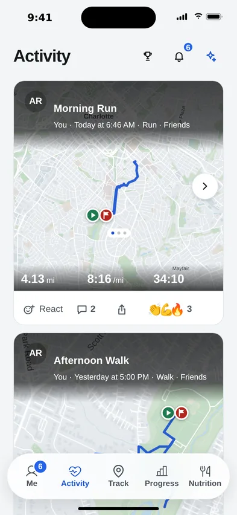
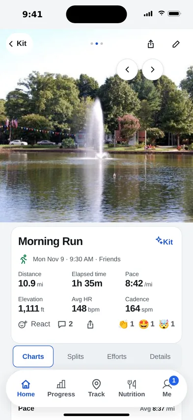
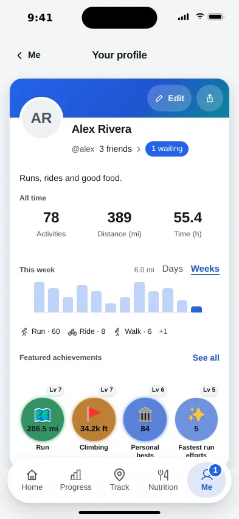
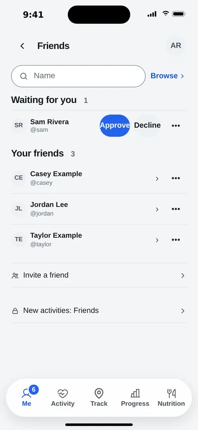

The feed
Catch up on friends’ shared workouts and send a cheer or comment.
Find friends, share workouts, and send cheers or comments.
See shared workouts newest first; new accounts share with everyone; saved choices stay unchanged.

Catch up on friends’ shared workouts and send a cheer or comment.

Add a photo to a workout shared with friends.

See the details friends choose to show on their profile.

Search names and send friend requests.
Photos of Freedom Park, Charlotte: James Willamor and City Dweller 2, CC BY-SA, via Wikimedia Commons.
Choose your photo, bio, stats and sports; preview your card as friends see it.
Only you see your food logs, body data and Kit conversations.
Share recaps, celebrate milestones or invite friends to challenges; you choose what to share.